Plenary, Keynote & Invited
Plenary Session
Our distinguished plenary speaker will present cutting-edge research in sewage information systems.
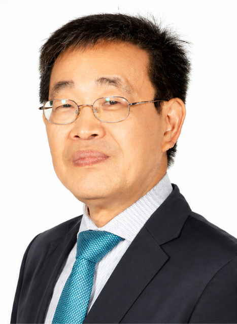
Keynote Speakers
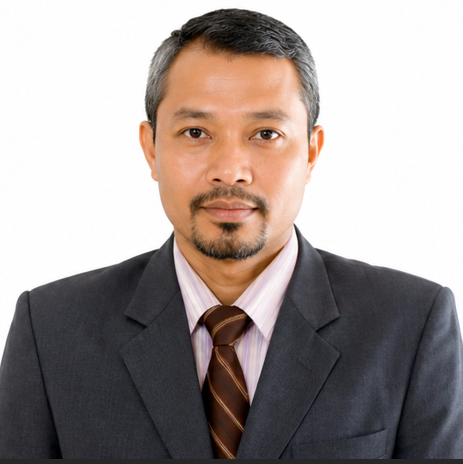
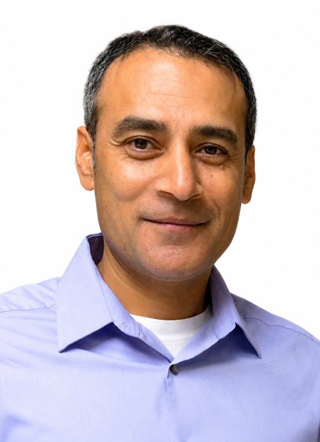
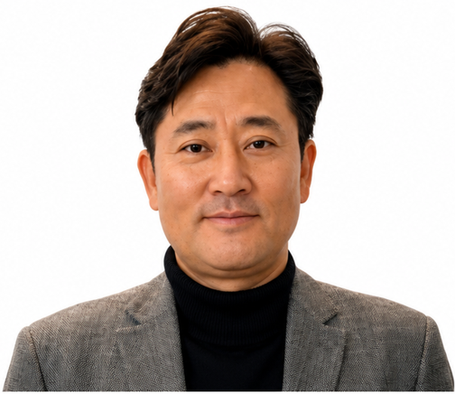
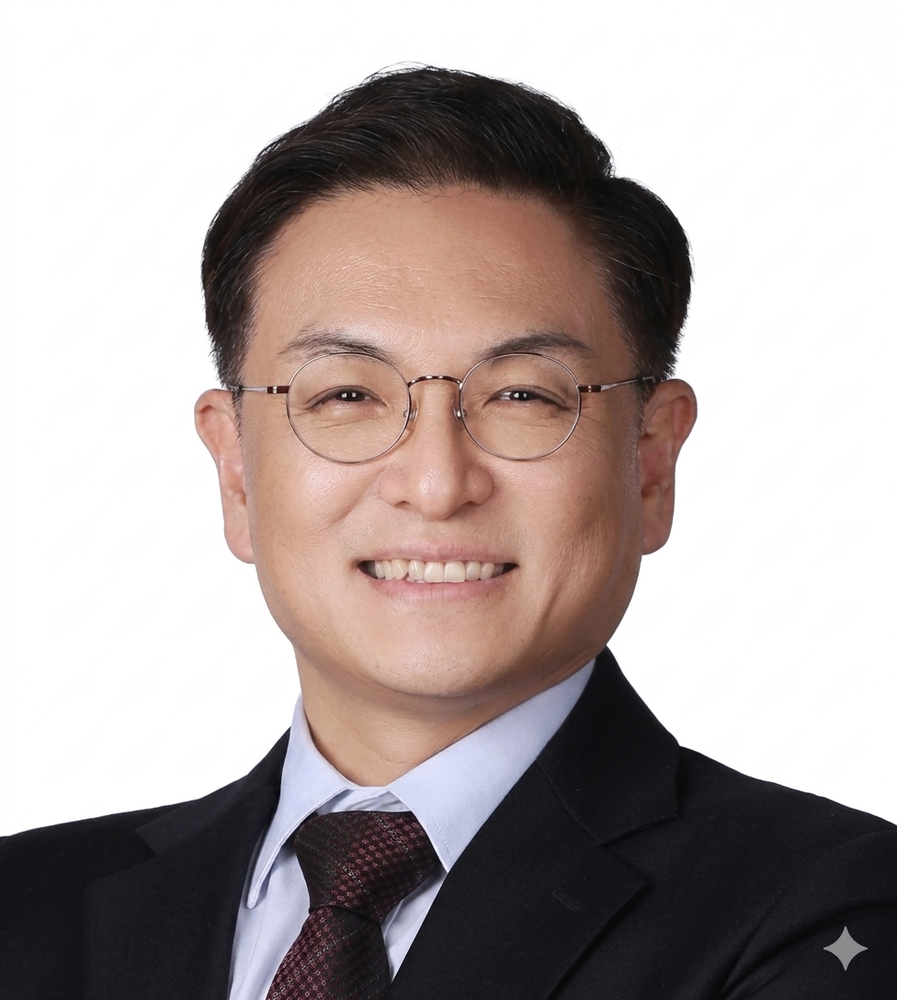
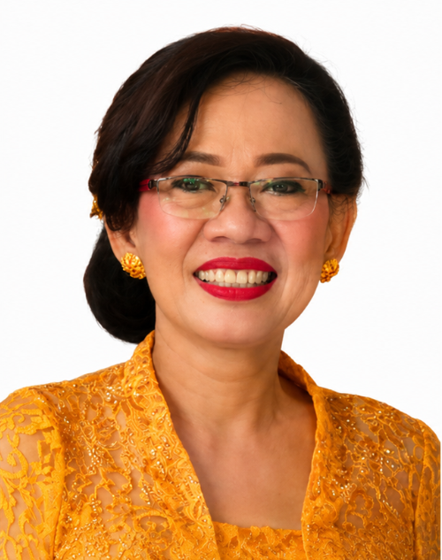
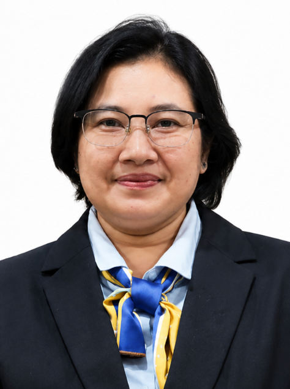
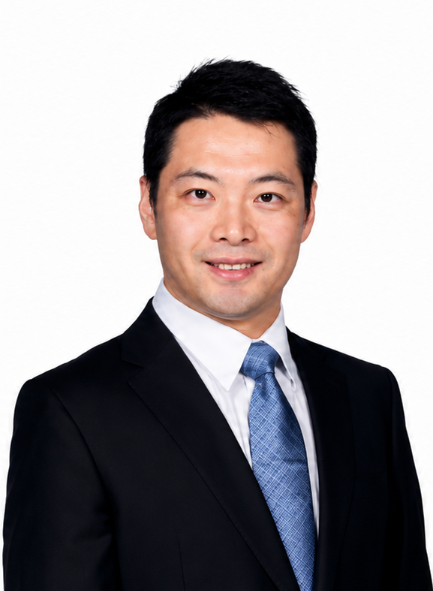
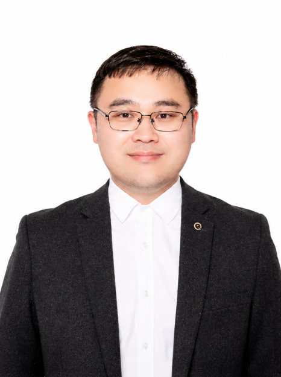
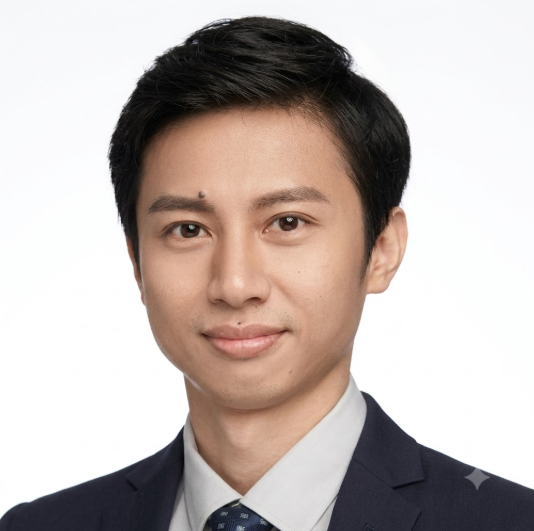
FJ'">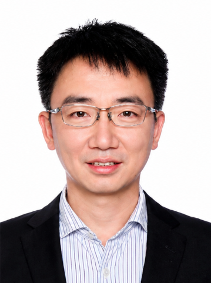
GL'">Invited Speakers
Invited speakers will share cutting-edge research and insights from their work.
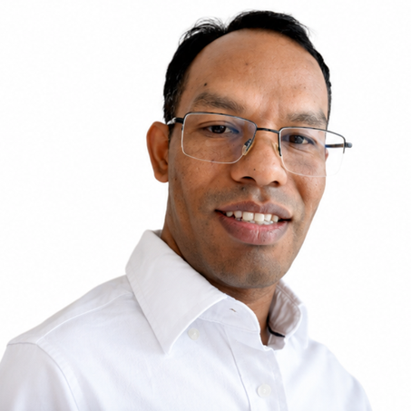
SKC'">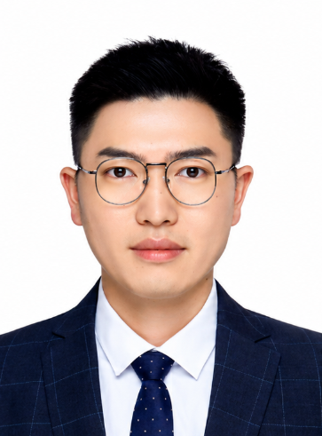
FZ'">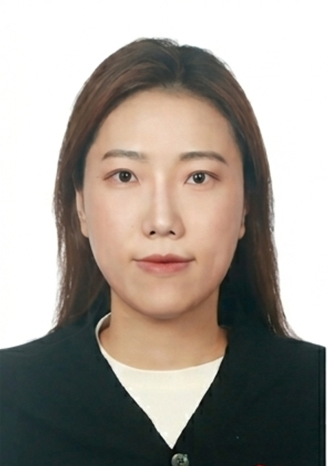
Research and Intern Students
Research and Intern students will share their findings.
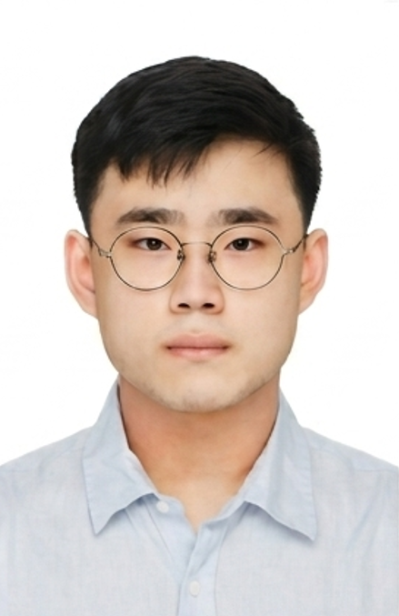
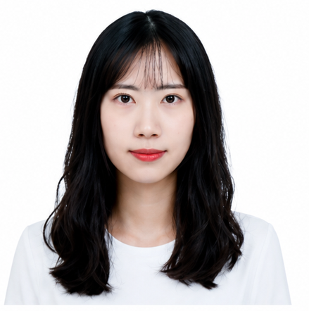
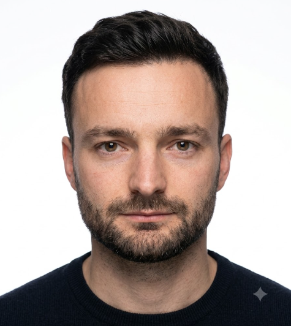
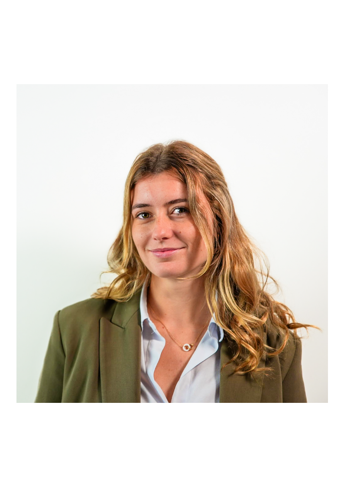
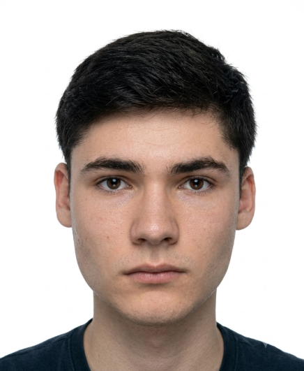
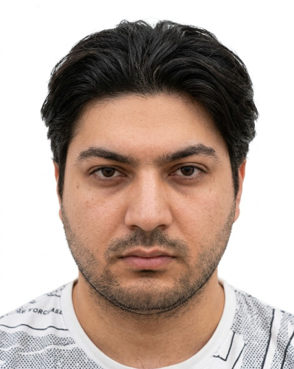